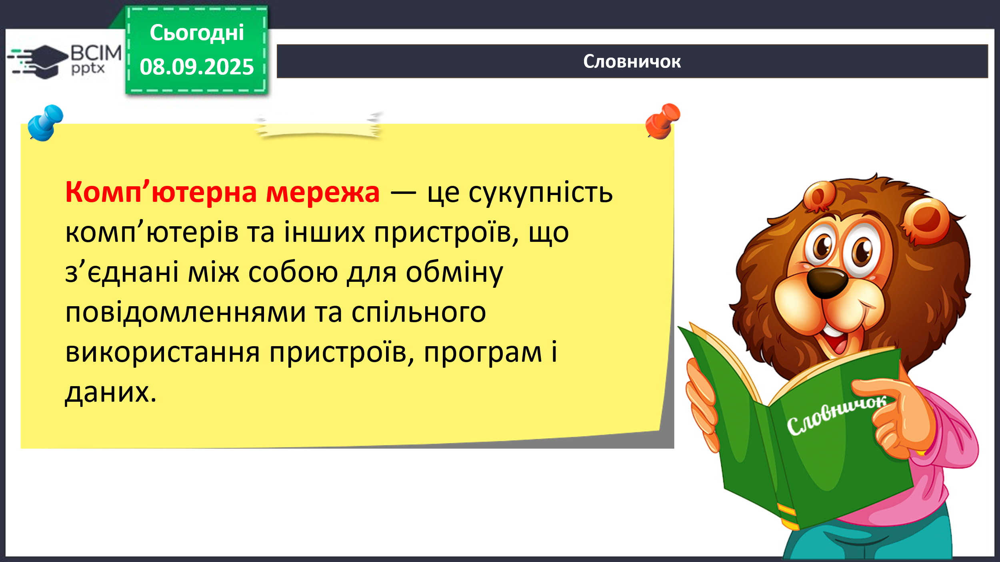
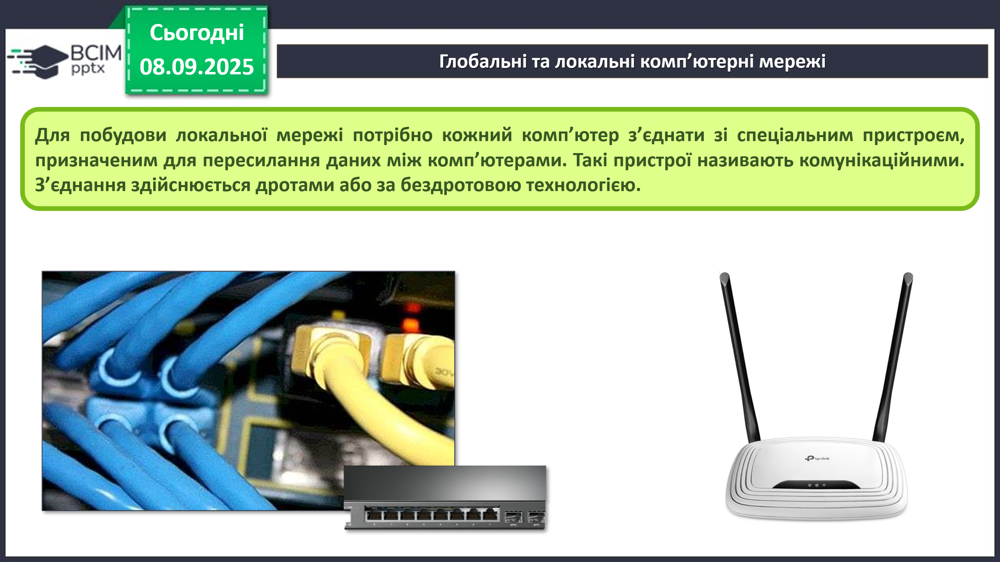
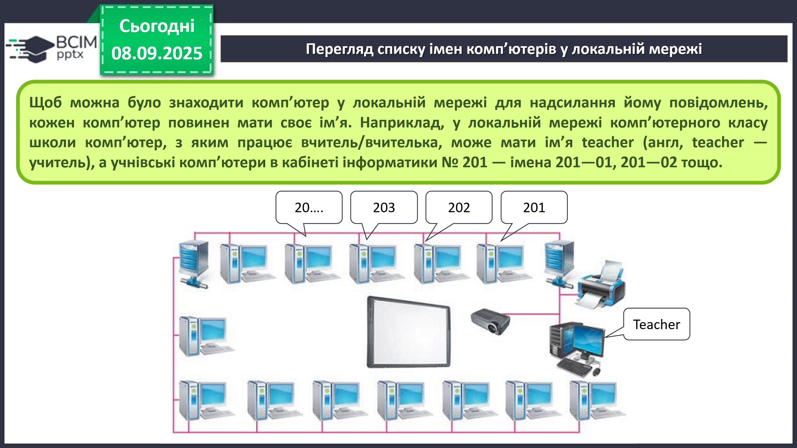
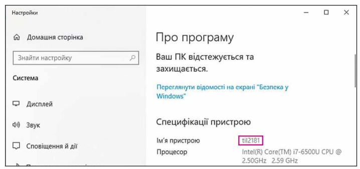
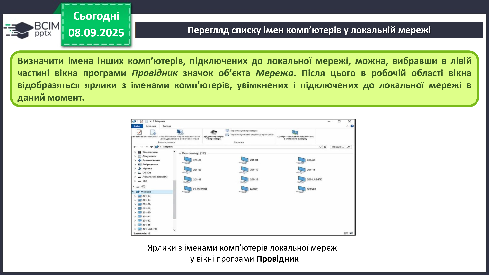
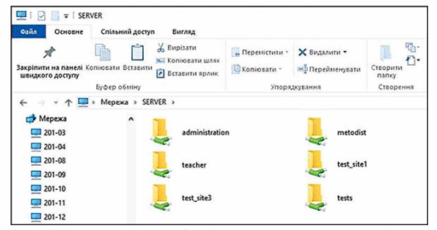

HUB 56 · 5 клас · Урок №10–11
Теорія
Комп’ютерна мережа. Локальні і глобальні комп’ютерні мережі. Перегляд списку імен комп’ютерів у локальній мережі
Поняття про комп’ютерні мережі
У своїй повсякденній діяльності людині доводиться постійно передавати та отримувати повідомлення.
Поміркуйте:
- Які засоби використовують для передавання повідомлень хлопчики та дівчата на малюнку та які ще засоби можна використовувати?
- Як можна передавати файли?
Одним із засобів обміну повідомленнями є комп’ютерні мережі. До комп’ютерної мережі можна підключити, крім комп’ютерів, принтери, вебкамери та інші пристрої. Завдяки використанню комп’ютерних мереж користувачі можуть отримати доступ до потрібних даних на інших комп’ютерах.
Комп’ютерна мережа — це сукупність комп’ютерів та інших пристроїв, що з’єднані між собою для обміну повідомленнями та спільного використання пристроїв, програм і даних.

Глобальні та локальні комп’ютерні мережі
Комп’ютерні мережі можуть з’єднувати різну кількість комп’ютерів та охоплювати різні за площею території.
Глобальний (лат. globe — земна куля) — той, що належить усьому світу, поширюється на весь світ.
Ви вже працювали з комп’ютерною мережею Інтернет і знаєте, що вона з’єднує мільйони комп’ютерів з різних куточків світу. Тому Інтернет називають ГЛОБАЛЬНОЮ МЕРЕЖЕЮ.
Мережу, яка з’єднує комп’ютери та інші пристрої, що розташовані на порівняно невеликій відстані один від одного, як правило, в межах однієї або кількох сусідніх будівель, називають ЛОКАЛЬНОЮ.
Локальні мережі створюють для потреб закладів освіти, банків, супермаркетів тощо. У локальній мережі може бути від двох до кількох тисяч комп’ютерів. Напевне, комп’ютери вашого закладу освіти також з’єднані в локальну мережу.
Що потрібно було б робити в описаних ситуаціях, якби не було локальної мережі? Зробіть висновки, у чому перевага використання локальної мережі закладу освіти:
- використовуючи локальну мережу, учитель/учителька переглядає файли з результатами виконання практичних робіт, що зберігаються на носіях даних учнівських комп’ютерів;
- для друкування матеріалів з будь-якого комп’ютера локальної мережі використовується спільний принтер, підключений до цієї мережі;
- лише один пристрій має прямий зв’язок з Інтернетом, а доступ до Інтернету.
Для побудови локальної мережі потрібно кожний комп’ютер з’єднати зі спеціальним пристроєм, призначеним для пересилання даних між комп’ютерами. Такі пристрої називають комунікаційними. З’єднання здійснюється дротами або за бездротовою технологією.

Перегляд списку імен комп’ютерів у локальній мережі
Щоб можна було знаходити комп’ютер у локальній мережі для надсилання йому повідомлень, кожен комп’ютер повинен мати своє ім’я. Наприклад, у локальній мережі комп’ютерного класу школи комп’ютер, з яким працює вчитель/вчителька, може мати ім’я teacher (англ, teacher — учитель), а учнівські комп’ютери в кабінеті інформатики № 201 — імена 201—01, 201—02 тощо.

Щоб дізнатися ім’я комп’ютера, з яким ви працюєте, слід:
- Відкрити вікно програми Провідник.
- Вибрати значок Цей ПК в лівій частині вікна.
- Вибрати кнопку Властивості на вкладці Комп’ютер.
- Переглянути запис у рядку Ім’я пристрою у вікні Настройки, що відкриється. Наприклад, на малюнку наведено вікно Настройки комп’ютера з іменем til2181.

Визначити імена інших комп’ютерів, підключених до локальної мережі, можна, вибравши в лівій частині вікна програми Провідник значок об’єкта Мережа. Після цього в робочій області вікна відобразяться ярлики з іменами комп’ютерів, увімкнених і підключених до локальної мережі в даний момент.

Робота з папками та файлами в локальній мережі
Будемо називати комп’ютер, з яким ви працюєте безпосередньо, локальним, а будь-який інший комп’ютер у мережі — віддаленим. Щоб користувачі могли працювати з файлами та папками, розміщеними на деякому віддаленому комп’ютері в локальній мережі, до цих файлів і папок повинен бути відкритий спільний доступ. Доступ може бути повним або частковим. За повного доступу всі користувачі мають право вносити зміни до файлів і папок та навіть видаляти їх. У разі часткового доступу користувачі мають право лише переглядати вміст папок і файлів та копіювати їх на локальний комп’ютер.
Щоб переглянути список папок будь-якого комп’ютера локальної мережі, потрібно виконати такий алгоритм:
- Відкрити вікно Провідник
- Вибрати значок об’єкта Мережа
- Двічі клацнути на ярлику потрібного комп’ютера.

Операції над файлами та папками на будь-якому комп’ютері в локальній мережі виконуються за відомими вам алгоритмами. Але є певні особливості:
- створювати, перейменовувати та видаляти файли та папки в папці на віддаленому комп’ютері можна, якщо до цієї папки відкрито повний доступ;
- об’єкт, видалений на віддаленому комп’ютері в мережі, не потрапляє до Кошика, тому його неможливо відновити стандартною операцією відновлення з Кошика.